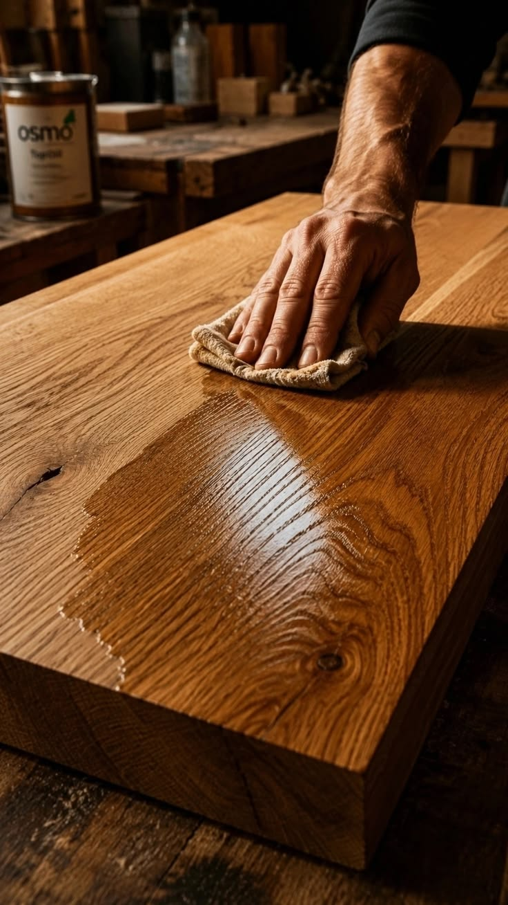
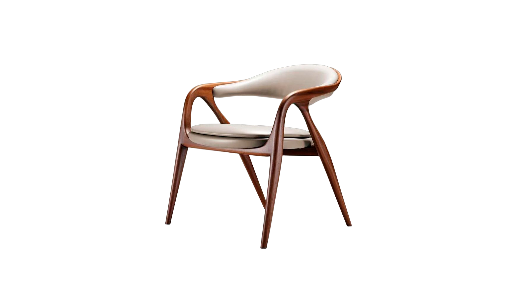
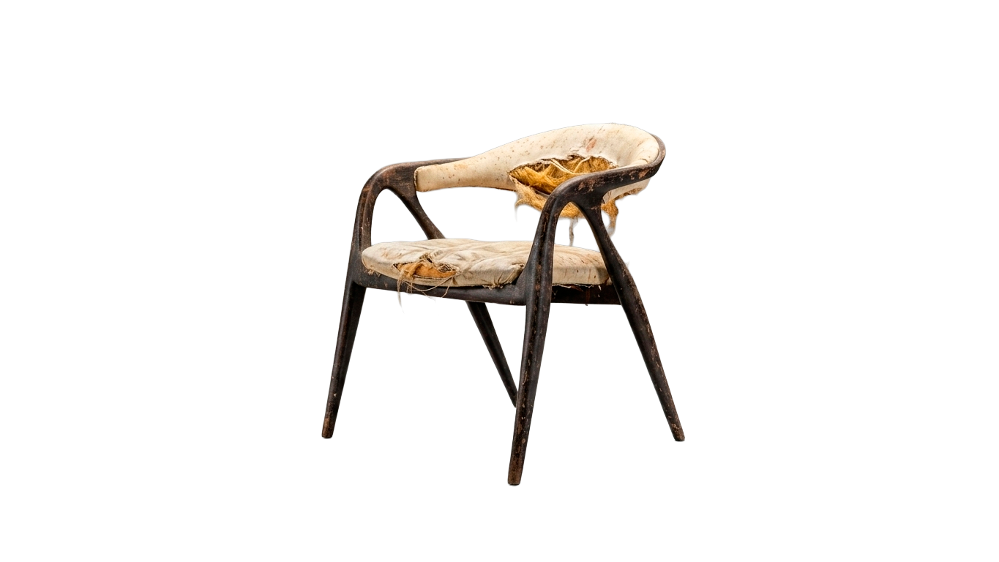
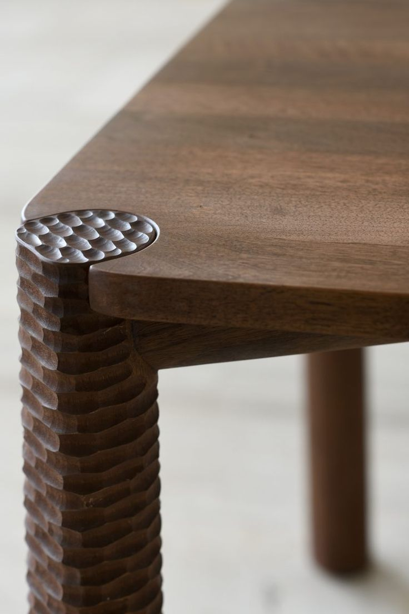
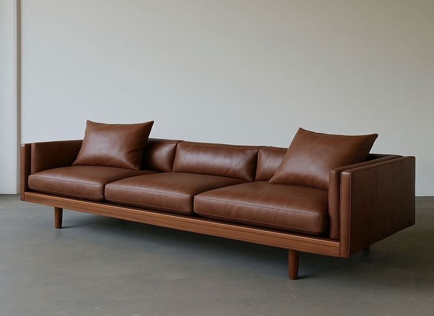

Patrimonio
Conservamos la esencia y el valor histórico de cada pieza.
Estudio de restauración. Muebles con pasado,
rediseñados para habitar el presente.
Pasá el cursor sobre la pantalla para revelar el pasado de nuestras piezas y descubrir el diálogo entre el diseño original y las técnicas contemporáneas.
Ver ProyectosConservamos la esencia y el valor histórico de cada pieza.
Recuperamos estructuras y materiales originales.
Incorporamos acabados contemporáneos y nuevas posibilidades.
Extender la vida útil de un mueble también es una forma de cuidar recursos.
Nuestra mirada
En RAÍZ entendemos la restauración como un diálogo entre pasado y presente. Analizamos cada pieza, respetamos su historia y la transformamos para que vuelva a ocupar un lugar en la vida cotidiana.
Conocer nuestro procesoServicios
Intervención completa de estructura, superficie y acabado. Devolvemos la pieza a su estado original respetando su historia y carácter únicos.
Más solicitadoRenovamos rellenos, muelles y telas con materiales de alta durabilidad. Técnica tradicional combinada con acabados contemporáneos.
Butacas · Sillas · SofásConsolidamos uniones, encastres y fracturas con colas de carpintería de alta resistencia para devolver solidez y estabilidad a cada pieza.
Estructuras · EncastresLimpieza profunda y decapado de barnices y pinturas antiguas para revelar la madera original y prepararla para un nuevo acabado.
Decapado · LimpiezaFormación

Aprendé técnicas tradicionales de ebanistería, tratamiento de maderas y acabados clásicos desde cero.

Domina el uso de cinchas, resortes y espumas modernas para revivir sillas, butacas y sillones de diseño.

Especializate en técnicas de lavado de madera, pátinas contemporáneas, protección mate y lustre a la goma laca.

Restauramos historias para que vuelvan
a formar parte del presente.Proyectos



